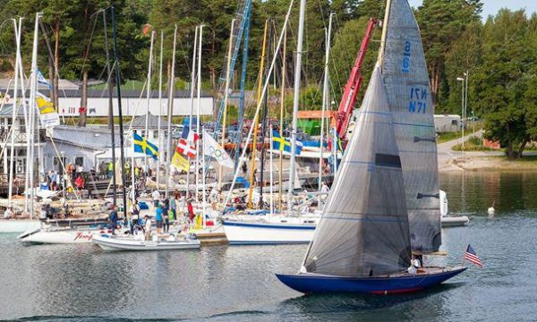

välkommen Till Nynäshamns Segelsällskap

NSS är en aktiv och betydelsefull aktör i Nynäshamn
med en naturlig och mångårig verksamhet med inriktning på
sjöliv, båtsport, segling och ungdoms- verksamhet.
NSS äger en förnämlig klubbanläggning, varv och bryggor vid Fagerviken,
många bryggor i Trehörningsviken samt klubbholmen Lacka strax norr om Nynäshamn.